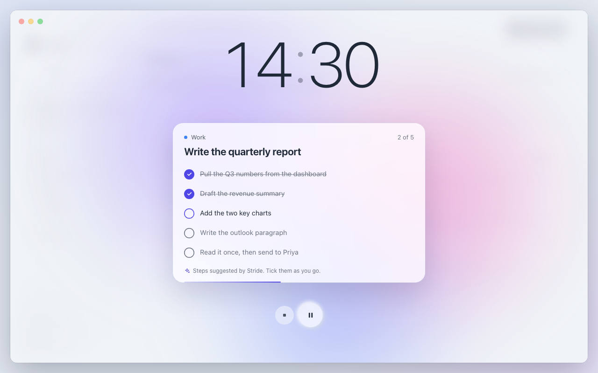
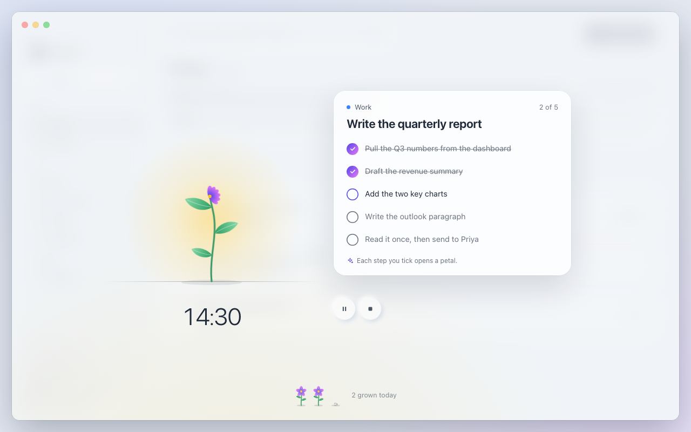
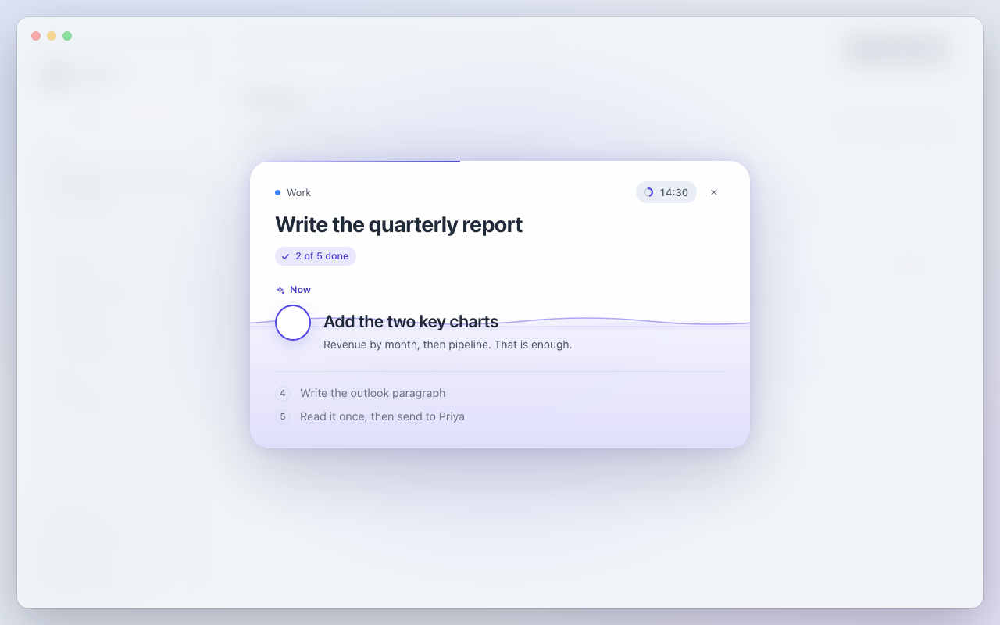

Focus, three directions
Each prototype is the whole flow in one place: pick a task, start, work through the AI steps, take a break, finish. Open one, hover a task and press its Focus button. Everything runs offline.

A
Still
Apple-calm. A big, thin timer and the task card on an ambient light that slowly warms from indigo to dusk as the session goes on. Steps expand in place.
Open prototype

B
Grow
A living metaphor. A plant grows with time and its flower opens as you tick steps; finished sessions join today's garden.
Open prototype

C
Stage
Task first. The card is the progress: it fills as steps are done and lights up when the task is finished. Only the current step is big; the time is a small pill.
Open prototype
Prototype controls sit at the bottom of each page (faded until hovered):
- Window / Menu bar switches to the 380px menu bar panel. It shares the same live state.
- Speed runs the clock at 30× or 300× to reach the finish and break quickly.
- Sound turns on a soft WebAudio chime (off by default). Theme cycles auto, light, dark.
- Space pauses, Esc ends the session. Reduced motion is respected.